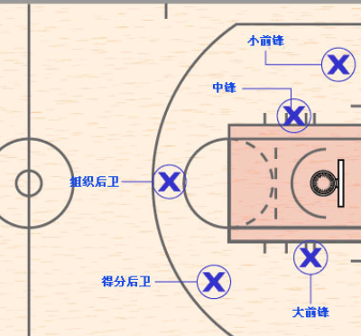

恶向胆边生，一个汉语成语，比喻愤怒到极点就会胆大得什么事都干得出来，也泛指恼怒到极点。出处《五代史平话》：“朱温未听得万事俱休，才听得后，怒从心上起，恶向胆边生。”，后常用于成语：怒从心头起，恶向胆边生。
一、篮球
- 位置介绍

- 控球后卫(PG–Point Guard)：全队进攻的组织者，并通过对球的控制来决定在恰当的时间传球给适合的球员得分，代表球员有保罗、库里等。
- 得分后卫(SG–Shooting Guard)：主要任务是得分，在场上是仅次于小前锋的第二得分手，但是他不需要练就像小前锋一般的单打身手，因为他经常是由队友帮他找出空档后投篮的。不过也就因为如此，他的外线准头与稳定性要非常好，代表人物哈登、乔丹，科比等。
- 小前锋(SF–Small Forward)：技术非常全面，基本可以胜任场上任何一个位置，也叫锋卫摇摆人，主要任务就是得分得分再得分，代表人物有詹姆斯、杜兰特等。
- 大前锋(PF–Power Forward)：在队上担任的任务几乎都是以苦工为主，要抢篮板、防守、卡位都少不了他，但是要投篮、得分，他却经常是最后一个。所以说，大前锋可以算是篮球场上最不起眼的角色。 大前锋，有时称作强力前锋，篮球比赛阵容中的一个位置，在中国也有「二中锋」的说法，代表球员有塔克、追梦格林、邓肯、加内特、诺维茨基等。
- 中锋(C–Center)：篮球比赛阵容中的一个位置，一般都由队中最高的球员担任，传统上强调篮下的防守，以及防守板球的保护。由于具有身高的优势，一些具备进攻天份的中锋球员也常常成为在禁区附近投篮得分的主要进攻点，主要代表人物有：奥尼尔，姚明，考辛斯，霍华德等。
- 术语解释
- 扣篮：运动员用单手或双手持球，跳起在空中自上而下直接将球扣进篮框。
- 补篮：投篮不中时，运动员跳起在空中将球补进篮内。
- 卡位：进攻人运用脚步动作把防守者挡在自己身后，这种步法叫卡位（多用于冲抢篮板）。
- 领接球：顺传球飞行方向移动，顺势接球。
- 错位防守：防守人站位在自己所防守的进攻人身侧，阻挠他接球叫错位防守。
- 要位：进攻人用身体把防守人挡在身后，占据有利的接球位置。
- 突破：运球超越防守人。
- 空切：进攻人空手向篮跑动。
- 一传：获球者由守转攻的第1次传球。
- 盖帽：进攻人投篮出手时，防守人设法在空中将球打掉的动作。
- 补位：当1个防守人失掉正确防守位置时，另1个防守人及时补占其正确的防守位 置。
- 协防：协助同伴防守。
- 紧逼防守：贴近进攻人，不断运用攻击性防守动作，威胁对方持球的安全或不让对方接球。
- 斜插：从边线向球篮或者向球场中间斜线快跑。
- 时间差：在投篮时，为躲避对方防守的封盖，利用空中停留来改变投篮出手时间，或者诱使对方跳起，当其下落时持球队员跳起投篮。
- 接应：无球进攻队员，主动抢位接球。
- 落位：在攻防转换时，攻地双方的布阵。
- 策应：进攻队在前场或全场通过中间队员组织的接应和转移球的战术配合，造成空切、绕切以及掩护等进攻机会。
- 掩护：进攻队员要以合理的技术动作，用身体挡住同伴的对手的去路，给同伴创造摆脱防守的机会的一种进攻配合。
- 突分：持球进攻队员突破后传球配合。
- 传切：持球进攻队员利用传球后立即空切，准备接球进攻。
- 补防：当1个防守队员失去位置，进攻队员持球突破有直接得分的可能时，邻 近的另1防守队员立即放弃自己的对手，去防持球突破的进攻者。
- 换防：防守队员交换防守。
- 关门：邻近的两名防持球者的队员，向进攻者突破的方向迅速选拔，形成“屏障”，堵住持球进攻者的突破路线。
- 夹击：两名防守队员共同卡住1名进攻队员，封堵其传球路线。
- 挤过：两名进攻队员进行掩护配合时，防地被掩护者的队员向其对后靠近，在进攻者即将完成掩护配合的一刹那，抢占位置，从两名进攻队员之间侧身挤过，破坏他们的掩护，并继续防住自己的对手。
- 穿过：当一名进攻队员进行掩护时，防守掩护者的队员稍离对手，让同伴从自己的掩护队员之间穿过去，继续防住对手。
- 挡拆：为持球队友挡住防守队员。然后跑动向防守弱侧接持球队友传球展开进攻或进行传球！
- 空中接力：队友往里传球，另一队友在空中接球，再在空中未落地的过程中将球扣入或投入篮筐的技术。
- 博脚：外线球员控球时被对手紧贴防守时，中锋或大前锋会走出来外线接球，然后再安全传到其他球员手上。
二、NBA
概念
- 美国职业篮球联赛(National Basketball Association)，简称美职篮，缩写NBA，于1946年6月6日在纽约成立，是由北美三十支队伍组成的男子职业篮球联盟，汇集了世界上最顶级的球员，是美国四大职业体育联盟之一。该协会一共拥有30支球队，分属东部联盟和西部联盟。每个联盟又被划分为3个赛区，各赛区由5支球队组成。
一些概念
NBA赛程：NBA的赛程安排分为夏季联赛、季前赛、常规赛、季后赛和总决赛。季前赛无特定主客场，常规赛采用主客场制，季后赛和总决赛采用七场四胜制的淘汰制。
- NBA夏季联赛(NBA Summer League)，是指一系列的在NBA休赛期进行的，由NBA球队参加的竞赛。一般NBA的球队在这个时候会尝试和常规赛不同的夏季联赛阵容，里面一般会包含大量的新秀和二年级生，以及球队要考察的还未签约的自由球员(一般不包括大牌自由球员)。现在被NBA官方认可的一共有三项赛事：犹他夏季联赛，奥兰多夏季联赛和拉斯维加斯夏季联赛，这三项赛事加起来，组成了NBA夏季联赛。
- NBA季前赛是各支球队在NBA常规赛季开始前进行的热身赛，因为在每个赛季结束后，每支球队在阵容上都有相当大的变化，为了让各队磨合阵容，熟悉各自球队的打法，确定各队新赛季的比赛阵容、同时也能增进队员、教练员之间的沟通，所以在每个赛季开始之前，NBA就举办若干场季前赛，使他们能以比较好的状态投入到漫长的常规赛的比赛当中。2017-2018NBA季前赛将于北京时间10月1日开打，首日将有两场比赛，分别是8：30勇士主场对阵掘金，10：00湖人主场对阵森林狼。2017-2018NBA季前赛将由10月1日持续至10月14日，共进行14天。
- 常规赛是每年的10月末至次年的4月中旬NBA30支球队之间进行的轮回赛，每支球队需要参加82场比赛，30支球队一共进行1230场比赛。常规赛结束后，东、西部联盟常规赛战绩排前八位的球队进入季后赛争夺总冠军。2018-19赛季常规赛已于北京时间10月17日打响。
2020-21赛季有了新赛制，在原来的赛程基础上增加了附加赛，在NBA常规赛结束后将进行附加赛确定分区第七和第八的排位，每个分区的第7-10名球队将参与竞争。具体赛程为分区胜率第7和第8的球队将率先进行附加赛，胜者将会直接成为分区第7；随后第9和第10的球队再进行新的附加赛，胜者将与第7、8名的败者再进行一场比赛，胜者成为分区第8。
- NBA季后赛指的是在每年4月中旬NBA常规赛结束后，NBA联盟根据各队82场常规赛战绩，按照NBA联盟排名规则分别排出东部和西部前八名之间进行的，最终获胜者获得NBA总冠军的比赛。
- NBA总决赛是争夺NBA最高荣誉NBA总冠军的赛事，也是NBA季后赛的最后一轮比赛，每年6月初举行，由东部联盟冠军对阵西部联盟冠军。
竞赛规则
- NBA的每一节常规比赛时间均为12分钟，共4节
- 所有的加时赛的比赛时间均为5分钟。
- 上下半场之间的休息时间为15分钟。
- 在第1节和第2节之间，第3节和第4节之间以及每一加时赛之间都应有130秒的比赛休息时间。
暂停：分为三种：短暂停、常规暂停和官方暂停。
- 短暂停时间为20秒，比赛双方在上下半场各有一个短暂停，但是不能累计使用。也就是说上半场的短暂停不能留到下半场用，到下半场时上半场的短暂停机会将作废。但下半场的短暂停可以在加时赛中继续使用。
- 常规暂停时间为100秒或者60秒，常规暂停也叫长暂停，比赛双方在常规时间48分钟内可以叫六次长暂停，其中包括四次100秒暂停和两次60秒短暂停。100秒暂停必须在一到四节中每节使用一次，当然也可以不使用，但同样不可以累计使用。
- 官方暂停时间为100秒。
违例
- 3秒违例
- 进攻三秒：进攻球员所在球队控制球时，不得在本方罚球区两侧端线及其向场外延伸4英尺(1.2米)范围以及罚球线的远离底线一侧的边缘之间的区域内停留超过三秒钟。
- 防守三秒违例：任何防守球员，如果位于16英尺(4.9米)罚球区或者该区域向底线外延伸4英尺(1.2米)的区域内，必须在三秒钟内处于积极防守一名对方球员的状态。积极防守的含义是，距离一名进攻球员不超过一臂远，并处于防守的位置。
- 24秒违例：当一次进攻开始时，从球员得球计算，必须在24秒时间内投篮，24秒内至少投篮一次，否则就是24秒违例。24秒违例有两种典型的情况：
- 一是24秒时间内球仍在球员手中或者相互之间传递，24秒内未能形成投篮，属于违例。
- 二是形成了投篮，但投出的皮球没有命中也未能碰触到篮筐，此时24秒时间用完，也属于违例。
- 3秒违例
比赛场地
- NBA篮球场标准规格为长94英尺(28.65米)，宽50英尺(15.24米)。球场边线线宽为2英寸(5.08厘米), 篮筐距离地面10英尺(3.048米)
- 三秒区(也叫限制区)，长19英尺(5.79米)，宽16英尺(4.88米)。
- 三分线距离23英尺9英寸(7.24米)，中圈内圆圈的半径是2英尺(0.61米)，一条中线横贯其中。
- 篮下的合理冲撞区是以篮筐中心投影为圆心，以4英尺(1.2米)为半径的半圆。
- 罚球线距离篮筐5.4米。
- 另有4条垂直于边线宽2英寸(5.08厘米)的标志线，各距底线28英尺(8.53米)向场内延伸3英尺(0.91米)。
- NBA篮球场的规格与国际篮联相比，最大的不同在于三分线的距离，NBA三分线的最远处距离篮筐为7.25米，比国际篮联标准场地的三分线要远0.49米。
球队：美职篮(NBA)一共有三十支球队，东部分区和西部分区各有15支球队。
- 西部分区又被划分为西北赛区、太平洋赛区、西南赛区，每个赛区由五支球队组成：
- 西北赛区：丹佛掘金、明尼苏达森林狼、俄克拉荷马雷霆、波特兰开拓者、犹他爵士。
- 太平洋赛区：金州勇士、洛杉矶快船、洛杉矶湖人、菲尼克斯太阳、萨克拉门托国王。
- 西南赛区：达拉斯小牛、休斯顿火箭、孟菲斯灰熊、新奥尔良鹈鹕、圣安东尼奥马刺。
- 东部分区也包括三大赛区：大西洋赛区、东南赛区、中部赛区，每个赛区同样由五支球队组成：
- 大西洋赛区：波士顿凯尔特人、布鲁克林篮网、纽约尼克斯、费城76人、多伦多猛龙。
- 中部赛区：芝加哥公牛、克利夫兰骑士、底特律活塞、印第安纳步行者、密尔沃基雄鹿。
- 东南赛区：亚特兰大老鹰、夏洛特黄蜂、迈阿密热火、奥兰多魔术、华盛顿奇才。
- 西部分区又被划分为西北赛区、太平洋赛区、西南赛区，每个赛区由五支球队组成：
NBA交易截止日被定在每个赛季开始之后的第16个星期四，交易截止日过后，联盟将按照各队截止日当天的最新阵容，计算他们本赛季的工资总额，超过奢侈税触发线的球队将被征收奢侈税。
- 奢侈税触发线为篮球事业收入的61%再除以30。
- 所征收的奢侈税将被均分为30份作为红利，逐一发放给工资总额在奢侈税触发线以下的球队，剩余部分则归联盟所有。
- 各队在到6月选秀大会前一天之前不得再度进行交易，但是依然可以选择裁退本队球员、签约自由球员，以便解决突发伤病这样的问题。其中，工资总额超过工资帽的球队只能使用底薪条款、中产条款或者10天短期条款与自由球员进行签约。此外，按照规定，如果一位球员在3月1日之后才被球队裁退，恢复自由球员身份，那么即便他能够继续与其他球队签约也不具备出战季后赛的资格。
参考
三、乒乓球
四、动感单车
概念
- 动感单车，英文名字Stationary bicycle，SPINNING，是由美国私人教练兼极限运动员JOHNNYG于二十世纪八十年代首创，是一种结合了音乐、视觉效果等独特的充满活力的室内自行车训练课程。动感单车在克服了室外行驶的一切缺点后，由于技术上的改进，使得这项运动在简单易学之余，成为一项能够使全身得到锻炼的有氧运动。
减肥姿势
- 正确的姿势应该是：身体稍向前倾，身体两臂伸直，腹部收紧，采用腹式呼吸方法，双腿和车的横梁平行或稍向内扣，膝、髋关节保持协调，身体不要左右摆动，注意把握骑行节奏。此外，蹬踏的姿势也很重要。“一般人认为，所谓的蹬踏就是脚往下踩，脚蹬子转一圈带动飞轮前进就行了，但正确的蹬踏应该分为踩、拉、提、推四个连贯动作。”专业教练石波现身说法：“脚掌先向下踩，小腿再向后收缩回拉，再向上提，最后往前推，这样正好是蹬踏一周360度。如此有节奏地蹬踏，不仅节省力气还能够提高速度。”
骑行动作
- 热身：在进行动感单车项目之前，除了要做点强度小的运动之外，正式的课堂上还会有针对性的热身程序。比较容易受伤的膝盖、容易疲劳的大腿、腰部都应该高度重视。下面几个动作是你必须要做的：
- 腿部伸展：因为大腿是动感单车运动的中心，要特别注意被拉伤。双腿尽量分开，左侧膝盖弯曲，上身下蹲，把身体重心转移到左边，右腿完全伸展，注意脚尖向前，感觉大腿内侧肌肉绷紧然后坚持5秒钟，换腿再做。也可以借助器械做腿部伸展。双手扶着车把，左腿抬起放在单车横梁上，右腿向后伸展，上身略微前倾，活动腿部的韧带和肌肉，然后换腿做。
- 侧腰伸展：在模拟单车经过紧急弯道时，上半身要左右晃动，以腰部力量控制重心，使之继续保证在单车上，腰部容易受伤。可以做一组简单动作，保持身体挺直，下半身保持不动，上半身做90度扭转；也可以做侧腰拉伸，双腿分开与肩同宽，举起手臂伸展至头顶，保证身体在同一水平面上，上半身向右侧弯曲。两侧各做5次。
- 压肩：鉴于整个身体在骑行过程中都微微向前倾，因此肩关节的压力非常大，舒展肩关节非常必要。双手握住车把，两腿分开，上半身向前俯，尽量让身体向地面方向靠近。
- 骑行：只要调整好坐姿，就跟着教练在灯光音乐渲染之下出发吧。最简单的骑行动作这里不必口啰唆，只管踏着节奏走就行。根据车把的形状，分为四个把位，循序渐进地锻炼腹斜肌、背阔和手臂。
- 上坡：旋转重量控制钮，增加腿部承受的力量，开始时上半身前倾，接着需要整个身体离开座位才能让轮子旋转起来。这个重量的控制非常关键，千万不要让脚蹬带着你的腿运动，而是要掌握主动权，完全把握金属轮的转速，将力量着重放在大腿上，同时能够感觉臀部和背部肌肉群此时也非常紧张，非常吃力。腿部近乎伸直，减轻了膝盖的负担，锻炼的重心是大腿和小腿的肌肉。
- 下坡：制造下坡的感觉可以把重量控制钮调到最轻，腿部基本没有负担。轻松地踩踏脚蹬，双手离开车把，上半身挺直，双手打开伸展，像要和清风拥抱一样。通常此时音乐比较柔和，把运动的强度降到最小。
- 弯道：上半身一定要和腿部配合运动才能达到整体减脂的效果，模拟急速转弯时，双手紧握车把，上半身向左右两侧探出去，基本偏移身体重心，用腰部力量控制上半身的幅度。
禁忌动作
- 在脚踏车上使用负重器材?在车上举重是无效而且不安全的。运动肌群在稳定状态下进行重量训练才是最有效的。
- 单手或放开双手骑车?在站姿或是跳跃的情况下可能让你严重受伤；在坐姿爬坡时，会造成腰部受力不均。
- 骑车时脚趾朝下?它会造成骨结节发炎和脚部麻木。踩踏时双脚应与地面平行，脚掌在脚踏板的正中。
- 完全不加阻力?无阻力的踩动是对运动时间的浪费，而且，在高转速的情形下不加阻力踩动也会造成运动伤害。
- 向后踩这个动作会使脚踏松动，当脚踏掉下来的时候就可能致伤。研究证明，向后踩与向前踩使用的是同样肌群，消耗等量的热量，因此向后踩没有任何优势。
- 在坐姿的时候使用握姿?可能造成髋关节以及脊椎的过度弯曲，从而产生腰部疼痛。当需要往上看时，这种握姿易造成颈部的拉伤。
- 把脚放在车把上进行伸展?也许一般人都没有足够的柔韧度将脚放到车把上进行伸展。
五、蹦极
概念
蹦极(Bungee Jumping)，也叫机索跳，白话叫笨猪跳，是近些年来新兴的一项非常刺激的户外休闲活动。跳跃者站在约40米以上(相当于10层楼)高度的桥梁、塔顶、高楼、吊车甚至热气球上，把一端固定的一根长长的橡皮条绑在踝关节处然后两臂伸开，双腿并拢，头朝下跳下去。绑在跳跃者踝部的橡皮条很长，足以使跳跃者在空中享受几秒钟的“自由落体”。当人体落到离地面一定距离时，橡皮绳被拉开、绷紧、阻止人体继续下落，当到达最低点时橡皮再次弹起，人被拉起，随后，又落下，这样反复多次直到橡皮绳的弹性消失为止，这就是蹦极的全过程。
蹦极源于英文
bungy，也有人称bungee。bungee最早出现于牛津极限运动俱乐部，他们管这项运动叫做bungee，这项运动在新西兰叫bungy。bungy和bungee是有差别的，具体来说就算是bungee所用的绳索是用多种材料复合而成，它的特点是有更高的自由落体，反弹时间更长，感觉更刺激。bungy使用的绳索是橡皮绳(具有无限的伸缩)，有可变的掣动系统，能控制最大伸缩距离。它的特点是比较低的速度，比较高的反弹，感觉平稳，特别适合绑踝跳。
分类
- 按跳法分类
- 绑腰后跃式
- 绑腰前扑式
- 绑脚高空跳水式
- 绑脚后空翻式
- 绑背弹跳
- 双人跳
- 按地点分类
- 桥梁蹦极：在桥梁上伸出一个跳台，或在悬崖绝壁上伸出一个跳台。
- 塔式蹦极：主要是在广场上建造一个斜塔，然后在塔上伸出一个跳台。
- 火箭蹦极：顾名思义，将人象火箭一样向上弹起，然后上下弹跃。
- 按跳法分类
世界最高的五个蹦极地
- 美国皇家峡谷悬索桥，321米。
- 中国澳门旅游塔，233米。
- 瑞士Verzasca大坝，220米。
- 南非Bloukrans大桥，216米。
- 瑞士Niouc吊桥，190米。
青龙峡
- 青龙峡位于北京市怀柔区城北20公里处，距北京三元桥75公里，是集青山、绿水、古长城于一体的自然风景区。景区占地面积150公顷，南北狭长约十余华里，雄伟的水库大坝将景区分为两个部分。
- 青龙峡旅游度假村位于怀柔区怀北镇著名的古长城关口大水峪关附近，南邻风光旖旎的雁栖湖，是集田园风光、山川秀色、青山绿谷、长城古貌为一体的旅游观光、度假休闲胜地。独特的塞外气候，凉爽宜人，是人们远离闹市喧哗，寻觅山水静地，回归山野自然，旅游观光度假的最佳选择。青龙峡风景区由万里长城登城游览、苍龙峡观飞龙瀑和青龙峡水上游乐三大景区组成。
- 主要景点
- 飞瀑狂泻：7-8月份雨量充足，水位达到一定程度就会出现溢洪瀑，瀑布宽12米，落差50米，飞瀑狂泄时似一条白龙飞旋而下，气势滂沱，情景极为壮观。
- 一石六景：从不同角度观看，可以看出六种不同的景观，分别为企鹅石、情侣岩、幸福之家、骆驼峰、鸳鸯石、雄师盘望。
- 玉皇台：景区最高峰，海拔530米。
- 苍龙峡观飞龙瀑：传说苍龙峪历年夏季水量大增，溪水奔流不息，老龙行雨所致，加之峪内植被好，山色苍茫，故名“苍龙峪”。
- 明代古长城：青龙峡古长城为明代长城的边关要塞大水峪关。
- 水上游乐：网红桥、竹筏、游艇、快艇等项目
- 超越极限：设有蹦极跳、攀岩、速降等娱乐项目
- 蹦极跳台离水面约60-70米，为北京市最高的一处
- 速降全长320米，落差28米
- 攀岩高约25米
- 精品缆车：景区青龙山脚下乘坐登山缆车到达青龙峡最高峰玉皇台，缆车全长800米，落差369米，往返仅需20分钟。